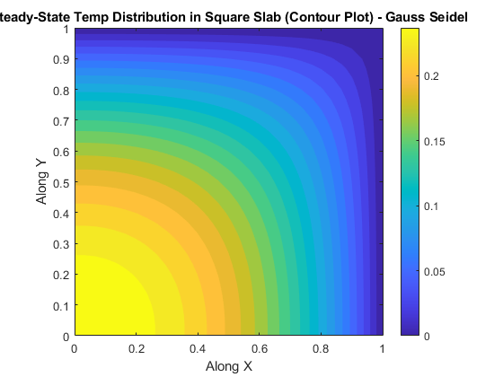
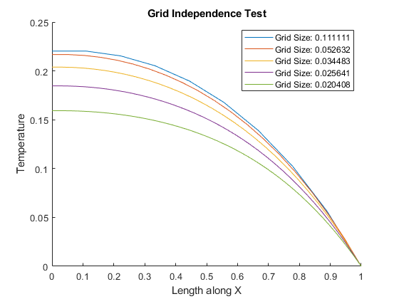

L = 1;
nx = 31;
ny = 31;
x = linspace(0, L, nx);
y = linspace(0, L, ny);
dx = x(2) - x(1);
dy = y(2) - y(1);
beta = dx / dy;
Tolerance = 1e-4;
theta = zeros(nx, ny);
theta_old = theta;
theta(nx, :) = 0;
theta(:, ny) = 0;
it_gs = 0;
err_gs = 1;
tol_gs = 1e-4;
while err_gs > tol_gs
for i = 2:nx-1
for j = 2:ny-1
theta(i, j) = 0.5 * (dx^2 + theta_old(i+1,j) + theta(i-1, j) + beta^2*theta_old(i, j+1) + beta^2*theta(i, j-1)) / (1 + beta^2);
end
end
theta(2:end, 1) = theta(2:end, 2);
theta(1, 1:end-1) = theta(2, 1:end-1);
err_gs = max(max(abs(theta - theta_old)));
it_gs = it_gs + 1;
theta_old = theta;
end
fprintf('No. of iterations in Gauss-Seidel Method: %d\n', it_gs);
[X_gs, Y_gs] = meshgrid(x, y);
figure;
contourf(X_gs, Y_gs, theta, 20, 'LineColor', 'none');
colorbar();
title('Steady-State Temp Distribution in Square Slab (Contour Plot) - Gauss Seidel');
xlabel('Along X');
ylabel('Along Y');
axis equal;
axis tight;
theta = zeros(nx, ny);
theta_old = theta;
theta(1, :) = 0;
theta(:, ny) = 0;
it_sor = 0;
err_sor = 1;
tol_sor = 1e-4;
alpha_sor = 1.8;
while err_sor > tol_sor
for i = 2:nx-1
for j = 2:ny-1
theta(i, j) = (1 - alpha_sor)*theta_old(i,j) + (alpha_sor*0.5*(dx^2 + theta_old(i+1,j) + theta(i-1, j) + (beta^2)*theta_old(i, j+1) + (beta^2)*theta(i, j-1))) / (1 + beta^2);
end
end
theta(2:end, 1) = theta(2:end, 2);
theta(1, 1:end-1) = theta(2, 1:end-1);
err_sor = max(max(abs(theta - theta_old)));
it_sor = it_sor + 1;
theta_old = theta;
end
fprintf('No. of iterations in Gauss-Seidel Method with SOR: %d\n', it_sor);
theta = zeros(nx, ny);
theta_old = theta;
theta(1, :) = 0;
theta(:, ny) = 0;
it_ur = 0;
err_ur = 1;
tol_ur = 1e-4;
alpha_ur = 0.6;
while err_ur > tol_ur
for i = 2:nx-1
for j = 2:ny-1
theta(i, j) = (1 - alpha_ur)*theta_old(i,j) + (alpha_ur*0.5*(dx^2 + theta_old(i+1,j) + theta(i-1, j) + (beta^2)*theta_old(i, j+1) + (beta^2)*theta(i, j-1))) / (1 + beta^2);
end
end
theta(2:end, 1) = theta(2:end, 2);
theta(1, 1:end-1) = theta(2, 1:end-1);
err_ur = max(max(abs(theta - theta_old)));
it_ur = it_ur + 1;
theta_old = theta;
end
fprintf('No. of iterations in Gauss-Seidel Method with UR: %d\n', it_ur);
T_ll = zeros(nx, ny);
T_ll(nx, :) = 0;
T_ll(:, ny) = 0;
T_ll_old = T_ll;
iterations = 0;
Error = 1;
while Error > Tolerance
for i = 2:nx-1
T_tdma = zeros(ny, 1);
T_tdma(ny) = 0;
P = zeros(ny, 1);
Q = zeros(ny, 1);
a = 2 * (1 + beta^2);
b = 1;
c = 1;
P(1) = 1;
Q(1) = 0;
d = zeros(ny, 1);
for k = 1:ny
d(k) = dx^2 + beta^2 * T_ll(i-1, k) + beta^2 * T_ll(i+1, k);
end
for j = 2:ny-1
P(j) = b / (a - c * P(j-1));
Q(j) = (d(j) + c * Q(j-1)) / (a - c * P(j-1));
end
Q(ny) = T_tdma(ny);
for j = ny-1:-1:1
T_tdma(j) = T_tdma(j+1) * P(j) + Q(j);
end
T_ll(i, :) = T_tdma';
end
T_ll(1, :) = T_ll(2, :);
Error = max(max(abs(T_ll - T_ll_old)));
iterations = iterations + 1;
T_ll_old = T_ll;
end
disp(['No. of iterations in Line by Line Gauss-Seidel Method: ', num2str(iterations)]);
grid_points = [10,20,30,40,50];
figure;
hold on;
for gp = grid_points
T_plot = gauss_siedel(gp);
T_mid_x = T_plot(round(gp/2), :);
x_t = linspace(0, L, gp);
plot(x_t, T_mid_x, 'DisplayName', sprintf('Grid Size: %.6f', x_t(2) - x_t(1)));
end
hold off;
xlabel('Length along X');
ylabel('Temperature');
title('Grid Independence Test');
legend;
figure;
hold on;
for gp = grid_points
T_plot = gauss_siedel(gp);
T_mid_y = T_plot(:,round(gp/2));
x_t = linspace(0, L, gp);
plot(x_t, T_mid_y, 'DisplayName', sprintf('Grid Size: %.6f', x_t(2) - x_t(1)));
end
hold off;
xlabel('Length along Y');
ylabel('Temperature');
title('Grid Independence Test');
legend;
function T_gs = gauss_siedel(n)
T_gs = zeros(n, n);
dx = 1 / (n - 1);
dy = 1 / (n- 1);
beta = dx / dy;
T_gs(n, :) = 0;
T_gs(:, n) = 0;
T_gs_old = T_gs;
iterations = 0;
Error = 2;
Tolerance = 1e-4;
while Error > Tolerance
for i = 2:n-1
for j = 2:n-1
T_gs(i, j) = 0.5 * (dx^2 + T_gs_old(i+1, j) + T_gs(i-1, j) + beta^2 * T_gs_old(i, j+1) + beta^2* T_gs(i, j-1)) / (1 + beta^2);
end
end
T_gs(2:end, 1) = T_gs(2:end, 2);
T_gs(1, 1:n-1) = T_gs(2, 1:n-1);
Error = max(max(abs(T_gs - T_gs_old)));
iterations = iterations + 1;
T_gs_old = T_gs;
end
fprintf('Grid Size: %.6f, Iterations: %d\n', dx, iterations);
end
No. of iterations in Gauss-Seidel Method: 805
No. of iterations in Gauss-Seidel Method with SOR: 225
No. of iterations in Gauss-Seidel Method with UR: 1128
No. of iterations in Line by Line Gauss-Seidel Method: 530
Grid Size: 0.111111, Iterations: 151
Grid Size: 0.052632, Iterations: 457
Grid Size: 0.034483, Iterations: 775
Grid Size: 0.025641, Iterations: 1035
Grid Size: 0.020408, Iterations: 1184
Grid Size: 0.111111, Iterations: 151
Grid Size: 0.052632, Iterations: 457
Grid Size: 0.034483, Iterations: 775
Grid Size: 0.025641, Iterations: 1035
Grid Size: 0.020408, Iterations: 1184
 